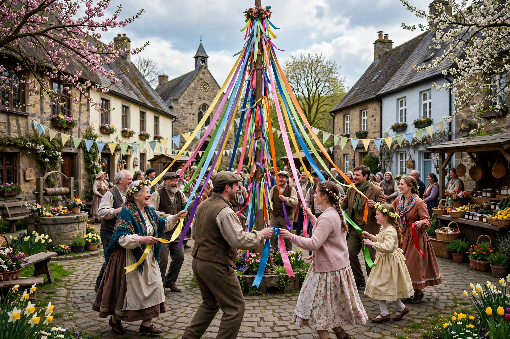

| Observed by | Many countries worldwide |
|---|---|
| Type | International |
| Date | 1 May |
| Related to | International Workers' Day, Beltane, Walpurgis Night |
May Day is a European festival of ancient origins marking the beginning of summer, usually celebrated on 1 May, around halfway between the Northern Hemisphere's spring equinox and midsummer solstice. Festivities may also be held the night before, known as May Eve. Traditions often include gathering wildflowers and green branches, weaving floral garlands, crowning a May Queen (sometimes a May King), and setting up a decorated May tree, Maypole, or May bush, around which people dance.

In 1889, 1 May was chosen by the Second International of socialist and communist parties to also be International Workers' Day, commemorating the workers and labour movement and the Haymarket affair of 1886 in Chicago. The two celebrations have co-existed ever since, and in many countries 1 May is a public holiday.
The earliest known May celebrations appeared with the Floralia, the Roman festival of Flora, the goddess of flowers, held from 27 April to 3 May during the Roman Republic, and with the Gaelic Beltane and Germanic Walpurgis Night celebrations. Beltane, falling about halfway between the spring equinox and summer solstice, marked the beginning of the pastoral summer season, when livestock were driven out to summer pastures.
In Germany, Walpurgis Night is celebrated the night before May Day, with bonfires and the wrapping of the Maibaum (maypole). In England, traditions include Morris dancing, crowning a May Queen, and dancing around a maypole hung with ribbons. In Finland, May Day (Vappu) is a major carnival-style festival for students and workers, marked by picnics, balloons, and the wearing of white graduation caps. In Sweden, Första maj combines labour marches with the previous evening's Valborg bonfires.
By the 19th century, May Day had become closely associated with the labour movement. The date was chosen to commemorate the Haymarket affair in Chicago in May 1886, where a labour protest rally turned violent. The Second International declared 1 May 1890 a day of demonstrations for the eight-hour day. In the Soviet Union and other communist states, May Day became a major state holiday marked by military parades, most famously in Moscow's Red Square.